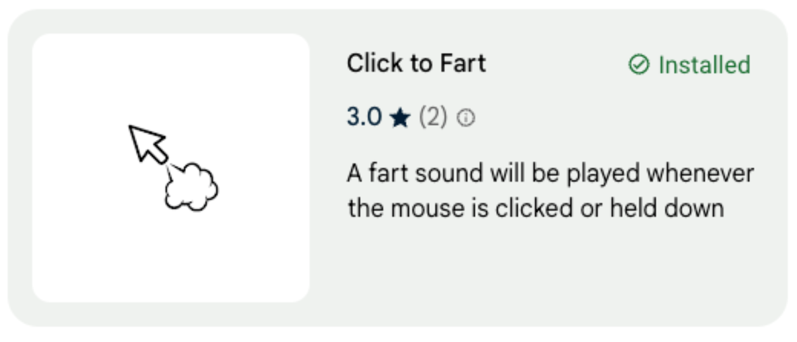

Ramsol's Repository
Click To Fart
Troll your friend's web surfing. This is a Chrome extension to make a fart sound whenever the mouse is clicked or held down. Download here
https://chromewebstore.google.com/detail/click-to-fart/lkodepkmpjpbgcfcgnbjinpjbmkbhlja
